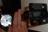

|
Preguntas frecuentes sobre la plataforma de contactos
- ¿Dónde puedo comprar la plataforma de contactos?
Consulte la página de precios.
- ¿Cómo puedo construir la plataforma de contactos?
Consulte la sección de hardware en la página documentos.
- ¿Por qué el acero tiene que ser templado?
El acero de la plataforma de contactos va a ser sometido a numerosas fuerzas, si es templado resiste mejor y tiene más capacidad de retorno a su posición inicial.
- ¿Puede usar células fotoeléctricas?
Sí, consulte la página de productos y la página de documentos.
Cronómetro Chronopic
- ¿Dónde puedo comprar el Chronopic?
Consulte la página de precios.
- ¿Puedo construir o fabricar de forma industrial el Chronopic?
Ver la página: construcción de Chronopic.
Usted puede fabricar el Chronopic de forma manual o industrial en cualquier país.
- ¿Puedo vender el Chronopic?
Sí, al precio que consideres oportuno. Cabe considerar la licencia del hardware: Creative Commons. Reconocimiento-Compartir bajo la misma licencia 2.5 España.
- Puedo conectar más de un Chronopic a un ordenador?
Sí.
- Un Chronopic es suficiente para captar estímulos de uno o más dispositivos de medida (como plataformas de contacto) siempre que no se produzca contacto en diversos dispositivos al mismo tiempo. Si desea medir el tiempo de contacto y el tiempo de vuelo en la marcha, no podrá diferenciar entre un pie y el otro con sólo un Chronopic aunque tenga una plataforma de contacto para cada pie.
-
Con dos o más Chronopics podrá captar canales diferentes. En el ejemplo del análisis de la marcha, podrá ubicar un dispositivo de medida para cada pie, conectando cada dispositivo a un Chronopic y conectando ambos Chronopics a un ordenador. Esta característica es nueva de Chronojump 0.9.
- ¿Por qué es necesario un cronómetro si cualquier ordenador puede hacer esa función?
Los sistemas operativos modernos son multitarea, lo que significa que el ordenador asigna pequeñas cantidades de tiempo para la realización de cada una de las tareas de manera que parece que ejecuta todas a la vez. Si el ordenador se encarga de captar los estímulos que proceden de la plataforma de contactos, en ocasiones será tardío en advertir estos eventos porque estará ocupado en otros asuntos, lo que se traduce en problemas de fiabilidad debido a que dos saltos de la misma duración podrían obtener mediciones distintas por circunstancias aleatorias.
El cronómetro externo que hemos construido está especializado en la captación de eventos en la plataforma de contactos por lo que no aparecerán errores de fiabilidad en sus registros.
Chronopic permitirá además que se pueda usar Chronojump o su versión reducida Chronojump-mini en casi cualquier dispositivo electrónico, y asegura una buena compatibilidad hacia el futuro.
Para más información lea este artículo: "Proyecto Chronojump: Sistema de Medida de la Capacidad de Salto usando Software y Hardware Libres".
|
 |